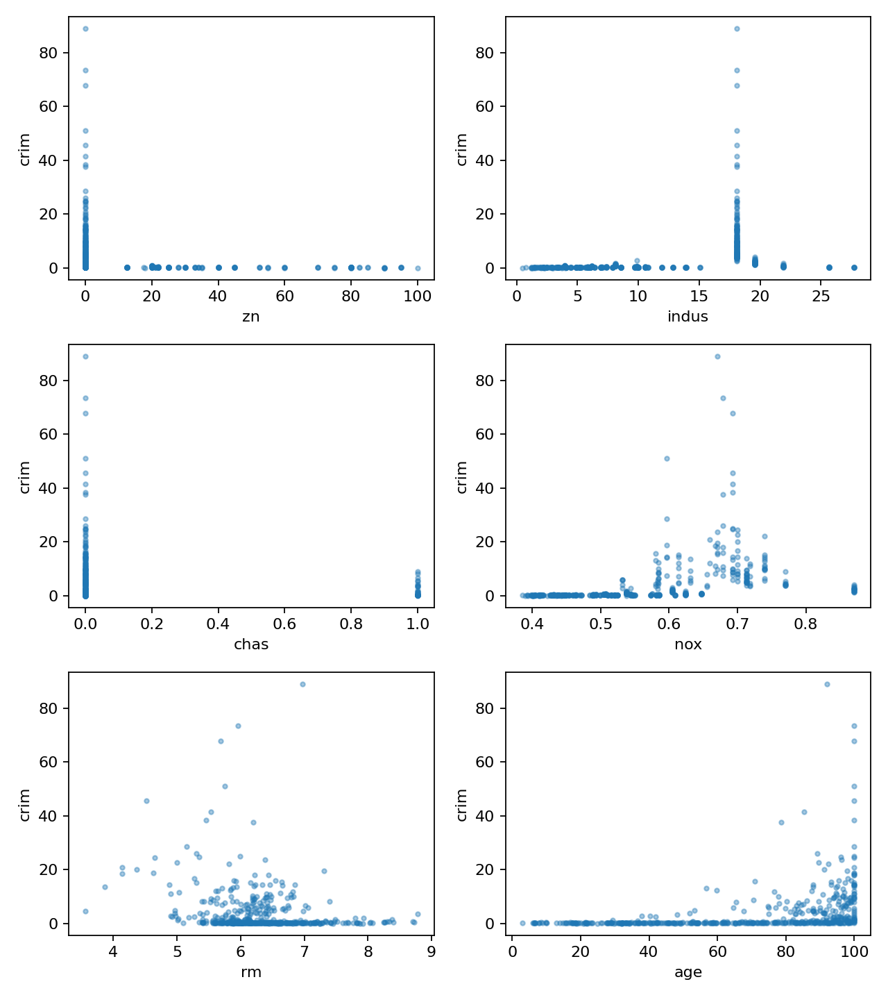
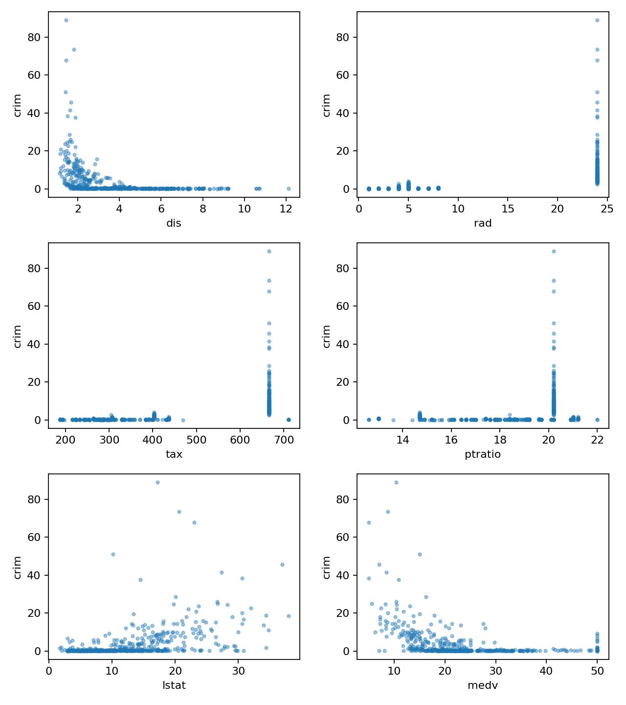

代码 3.7-15 · 第 15 题：散点图与非线性联合检验
按完整 Notebook 的顺序运行；本块可能依赖前面的变量。3.6—3.7包含教材真实数据与模拟实验；全样本统计分析不等于独立测试评估。
逐步读代码
axes.flat按顺序遍历二维坐标轴数组，每页6个变量。nunique统计不同取值数量，二元变量的平方和立方不提供新方向。先中心化x再构造高次幂，保持含截距三次多项式的拟合空间，同时减轻大数幂的数值问题。比较线性简模型与三次模型，联合检验新增二次、三次项为0；不能用三次模型整体F替代非线性检验。
实际运行输出
chas : binary; powers duplicate, skip nonlinear test
variable F_add_x2_x3 p
zn 4.811821 8.511995e-03
indus 31.986960 8.408754e-14
nox 42.758171 7.122383e-18
rm 5.308817 5.229427e-03
age 15.140063 4.125056e-07
dis 46.460365 3.071837e-19
rad 3.673270 2.607832e-02
tax 11.640023 1.144238e-05
ptratio 8.415530 2.541647e-04
lstat 3.319044 3.698322e-02
medv 116.634006 2.504778e-42

